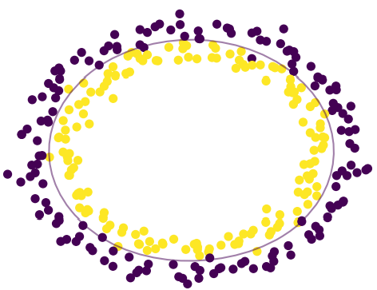
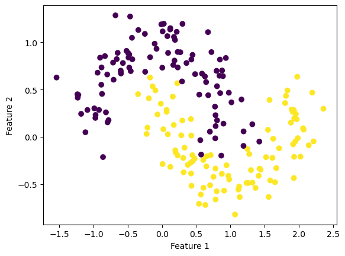

In the previous blog post, we looked at Logistic Regression with Gradient Descent, which worked well for binary classification of data with linear decision boundaries. However, in this blog post we aim to:
Appreciate the limitations of that approach by working with data that does not have Linear Decision Boundaries
Implement Kernel Logistic Regression and use that for binary classification of data that does not have Linear Decision Boundaries
Before we get started, let us get an understanding of what data with “non-linear decision boundaries” means. So far, we have been dealing with the “construction” of the best line which separates the data into one group or the other, however if you look at this data:

Visually, it is pretty apparent that the data follows a circular pattern, with the two “classes” having different radii (varying distance from the center). So it is pretty apparent that if we tried our implementation of Logistic Regression with Gradient Descent, it would not do well since by the inherent nature of this data - there are no linear decision boundaries.
Logistic Regression versus Kernel Logistic Regression on Data with Non-Linear Decision Boundaries
In this section, we aim to understand the performance difference of Logistic Regression and Kernel Logistic Regression by generating some data which has clear non-linear decision boundaries. For the Kernel Logistic Regression we will be using the code that I wrote, however for the Logistic Regression we will be using scikit-learn’s model. Let us go ahead and generate some synthetic data:
from KernelLogisticRegression import KernelLogisticRegressionfrom sklearn.metrics.pairwise import rbf_kernelfrom sklearn.datasets import make_moons, make_circlesfrom matplotlib import pyplot as pltfrom mlxtend.plotting import plot_decision_regionsfrom sklearn.linear_model import LogisticRegressionimport numpy as npnp.seterr(all="ignore")X, y = make_moons(200, shuffle =True, noise =0.2)#visualizing the dataplt.scatter(X[:,0], X[:,1], c = y)labels = plt.gca().set(xlabel ="Feature 1", ylabel ="Feature 2")

Clearly, the data above has non-linear decision boundaries and follows a “moon” like shape. Now, let us go ahead and fit our version of Kernel Logistic Regression and scikit-learn’s Logistic Regression on the data:
Therefore, we can clearly see how regular logistic regression, finds the best “straight line” that divides the two classes. However, it is not able to learn the “curvy” nature of the data. On the other hand, kernel logistic regression is able to learn that “curvy” nature, and therefore has a better performance at our classification task.
What is Kernel Logistic Regression?
Originally, when we were dealing with Logistic Regression, our empirical risk minimization problem was:
Now, in Kernel Logistic Regression, we want to map our original features onto a higher-dimensional space, where it possible to linearly classify our data, for this purpose our empirical risk minimization problem becomes:
Basically, what we do is we take the rows of the original feature matrix \(X\): \(x_i\), and perform the mapping \(\boldsymbol{\kappa}(\mathbf{x}_i)\) on it. Performing this operation on a feature row \(x_i\) results in a modified feature vector \(\boldsymbol{\kappa}(\mathbf{x}_i)\), which has entries:
Here, \(k(\mathbf{x}_1, \mathbf{x}_i)\) performs the kernel operation between two feature rows, and produces a single-value which for simplicity can be understood as the “similarity” between these two feature rows. Performing this operation on every feature row of the original feature matrix, with respect to every other feature row of the original feature matrix gives us the kernel matrix :
Therefore, in the kernel matrix\(\boldsymbol{\kappa}(\mathbf{X})\), each column \(i\) corresponds to the kernel operation done for the \(i\)th row of the original feature matrix, with respect to all feature rows in the original feature matrix. Therefore, we can see that our original feature matrix \(X \in \mathbb{R}^{nxp}\), becomes the kernel matrix \(\boldsymbol{\kappa}(\mathbf{X}) \in \mathbb{R}^{nxn}\), with more features we are in a better position to study the data in a higher-dimensional space. However, the fact that our matrix is now \(nxn\) means that we need to modify our weight vector as well. Our original feature vector was \(w \in \mathbb{R}^{p}\), but now our modified weight vector is \(v \in \mathbb{R}^{n}\). For each column \(i\) of the kernel matrix, the prediction is performed as follows:
Important Note: By definition, a regular multiplication of the feature matrix and the weight vector happens along the rows of the matrix, rather than the columns. However, by the properties of a kernel matrix created between the same matrix twice, we are guaranteed symmetry - so we do not need to transpose the matrix. This idea of transposition will become relevant when we perform the prediction function on unseen data (a new feature matrix).